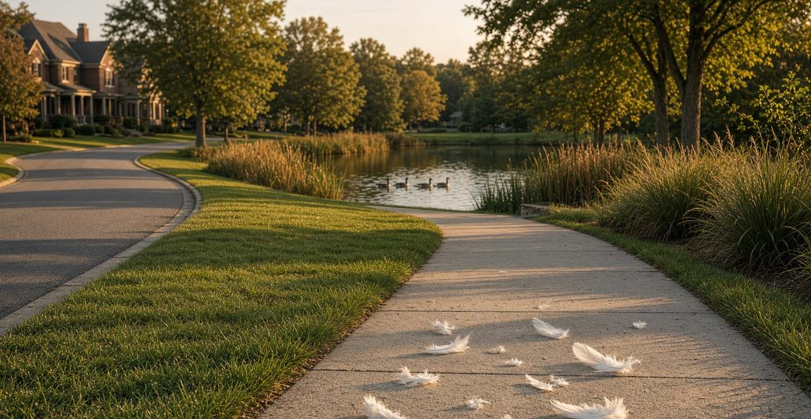

Essay · September 9, 2026
A five-year-old walked half a mile. Virginia made it a crime. The law says childhood independence matters.
A Virginia mother was convicted after allowing her five-year-old son to walk alone to a neighborhood pond. The facts deserve scrutiny—not because every parent must make the same choice, but because Virginia law expressly says that reasonable childhood independence is not, by itself, child neglect.

By any reasonable measure, this should be a conversation about parenting. Instead, it became a criminal case.
The walk
On June 5, 2026, Karyann Parkinson allowed her five-year-old son, Sam, to walk approximately half a mile to a neighborhood pond in Ford’s Colony, a gated community in the Williamsburg area of Virginia.52 He wanted to collect goose feathers. According to Parkinson’s account, she and Sam had already walked and biked the route together that morning; he had crossed the street about six times under her observation, including on his bike.21
Reporting on the route describes a short walk along a sidewalk separated from the street by about ten feet of grass, two streets with crosswalks, a posted 25-mph speed limit, and 24-hour private security.1 Ford’s Colony describes itself as a “secure, multigenerational gated community… situated on a landscape of golf courses, ponds, wetlands, and woodlands.”7 Parkinson, then eight months pregnant with her fifth child, has said she sent him down the path that happens to pass the pond, with instructions to collect feathers and come right back—not to play in the water.64
A neighbor noticed him. A security guard stopped him and walked him home. Parkinson has said the guard told her that unaccompanied children were not permitted, and that if it was not an HOA rule, it was against the law, and he would call the police.5 Police and Child Protective Services came to the house. Parkinson was subsequently charged with contributing to the delinquency of a minor under Virginia Code § 18.2-371.210
In late August 2026, after a bench trial in the Williamsburg–James City County Juvenile and Domestic Relations District Court, Judge Brian J. Smalls convicted her.18 She received a six-month jail sentence that was immediately suspended. The Washington Post reported that she had declined a withheld finding that would have required her to agree the evidence was sufficient for guilt.2 James City County DSS had already issued a substantiated Level 2 finding for lack of supervision and placed her on Virginia’s Child Abuse and Neglect Central Registry for seven years—a consequence that, she says, keeps her from volunteering in her children’s classrooms until Sam reaches sixth grade.134 She is appealing the conviction.47
Reasonable people can disagree about whether a particular five-year-old should be permitted to walk half a mile without an adult. But there is a crucial fact that should not get lost in the headlines: Virginia law specifically recognizes childhood independence.
Virginia already answered the question
In 2023, Virginia enacted Senate Bill 1367. Sen. Jill Holtzman Vogel was chief patron. The Senate passed it 40–0; the House, 96–0. Governor Glenn Youngkin signed it on March 26, 2023. It took effect July 1, 2023, as Chapter 568, and it amended both the social-services definition of an abused or neglected child in § 63.2-100 and the juvenile-code definition in § 16.1-228.1415
The resulting statute says that a child is not considered abused or neglected “for that reason alone” when a parent permits independent activity without adult supervision, provided the activity is appropriate for the child’s age, maturity, physical abilities, and mental abilities, and the lack of supervision is not “so grossly negligent as to endanger the health or safety of the child.”1112
Among the statute’s examples: traveling to or from school by bicycle or on foot; traveling to nearby locations by bicycle or on foot; playing outdoors; and remaining at home for a reasonable period of time.11 That is not an abstract statement about parental rights. It is Virginia law. And it matters enormously to this case.
The law does not say that every five-year-old is automatically capable of walking anywhere. It does not say parents may disregard obvious dangers. It does not eliminate the state’s authority to intervene when a child is actually placed in serious danger. What it does say is that the absence of an adult beside a child is not, by itself, sufficient to establish neglect.
The legislature deliberately directed attention toward the child’s age, maturity, physical and mental abilities, and the actual danger involved. That is a very different standard from: “A five-year-old was outside without an adult.”
What was the actual risk?
The reported facts are not that Sam was abandoned in an unfamiliar city. He was walking a familiar route within his gated residential community to a pond he had visited with his mother that morning. His mother says she had instructed him to go, collect the feathers, and return home. The security guard found him. He was returned safely. Nothing happened to him.16
None of those facts automatically proves that the decision was wise. They are precisely the kinds of facts that should matter when applying a statute that expressly makes age, maturity, physical and mental abilities, and the degree of danger relevant.
The state should not have to agree with every parent’s judgment. But disagreement is not the same thing as gross negligence.
A note from Hingham
I grew up in Hingham, Massachusetts. I remember elementary-school programs that treated children as people who could be taught to navigate their communities safely rather than as people who had to be physically accompanied everywhere. That memory is not offered as evidence of what Virginia law requires. It isn’t.
But Hingham’s public record still treats independent movement as something children learn. In 2021, Foster Elementary School held a Walk, Bike & Roll to School Day; the Hingham Police Department provided extra crossing-guard support, and more than 150 bicycles and scooters arrived at school that morning.17 The 2025–26 Hingham Middle School student handbook, discussing bicycles, puts the judgment where Virginia’s statute also puts it: “parents/guardians are in the best position to determine the ability of their child to ride a bicycle safely.”18
That is a useful illustration of a broader principle: children become capable of independent movement by learning how to move safely. A child does not suddenly acquire judgment, navigation skills, hazard recognition, and confidence on the day he turns 12. Those skills are developed incrementally. Parents teach them. Schools reinforce them. Communities provide opportunities to practice them. And eventually, children use those skills independently.
Independence and safety are not opposites
There is an unfortunate tendency in modern discussions of childhood safety to treat independence and safety as competing values. They are not. A child can be taught how to cross a street; how to recognize a dangerous situation; how to identify trustworthy adults; how to find his way home; how to respond if a stranger approaches; when to ask for help; and when to turn around.
The objective is not to make children dependent upon adults forever. The objective is to teach them how to function safely when an adult isn’t standing directly beside them. That is not neglect. It is education. And it is why Virginia’s legislature specifically included walking and bicycling to nearby locations among the examples of reasonable independent activity.14
The criminal charge deserves especially careful scrutiny
Parkinson was not convicted under a statute simply titled “letting a child walk alone.” She was convicted under Virginia Code § 18.2-371, which makes it a Class 1 misdemeanor for an adult who willfully contributes to, encourages, or causes any act, omission, or condition that renders a child delinquent, in need of services, in need of supervision, or abused or neglected as defined in § 16.1-228.10
That distinction matters. The prosecution therefore had to connect the parent’s conduct to those statutory elements. And because Virginia’s definitions expressly carve out reasonable independent activities—in the very section § 18.2-371 incorporates—the interaction between the criminal charge and the independent-activity provision deserves careful appellate examination.1216
Parkinson has said she believes the delinquency charge was an attempt to bypass the 2023 law.9 Let Grow, which drafted model independence language, notes that Virginia’s criminal law was not separately rewritten in 2023 even as the neglect definition was.16 Whether that gap is a feature of legislative drafting or a problem for this prosecution is exactly the kind of question an appeal exists to answer. The existence of a disagreement over whether a particular five-year-old should have been walking alone cannot simply answer it.
Otherwise, the independent-activity protection risks becoming nearly meaningless. A parent could comply with every ordinary safety consideration, reasonably evaluate a child’s maturity, permit a short walk to a nearby location, and still face criminal exposure whenever another adult disagreed with that judgment. That would transform a protection for reasonable childhood independence into a permission that exists only when nobody objects. That cannot be the intended function of the statute.
The government should have to prove the danger.
The strongest case is not that parents may do whatever they want
That would be too broad. Parents obviously can make dangerously negligent decisions. The state has an important responsibility to protect children who actually are endangered.
The better argument is narrower—and therefore stronger. The government should have to prove the danger. If a child is five years old, that fact is relevant. If the child is immature or unable to navigate safely, that is relevant. If the route is dangerous, that is relevant. If there is heavy traffic, a dangerous body of water, severe weather, a history of abductions, or some other specific hazard, those facts are relevant.
But the analysis cannot logically end with the child’s age. The statute itself rejects that kind of categorical rule. It asks whether the activity was appropriate for this child and whether the lack of supervision was sufficiently negligent to endanger the child’s health or safety. That is an individualized standard. It should be applied individually.
Jonathan Adler, who attended the trial, reports that Parkinson’s lawyer argued the only real evidence against her was that Sam was five, plus a catalog of hypothetical disasters.7 Reason’s account of the trial is consistent with that: no one proved the boy was incapable of walking a few blocks safely, and he had already done the crossings that morning.1 Those are claims about the trial record, not findings of this essay. They are the claims an appellate court is now in a position to test.
And the consequences matter
Even if someone concludes that Parkinson exercised poor judgment, criminal punishment is not the only possible response. There is an enormous difference between “I don’t think you should have allowed your child to do that” and “You committed a crime and will be listed on a child-abuse registry for seven years.” According to multiple reports, the latter is what happened.134
The suspended six-month sentence is serious enough. The registry consequences may be even more consequential for a parent who wants to participate in her children’s schools. That raises a proportionality question that extends beyond this one family. If ordinary parental judgments about age-appropriate independence can produce criminal convictions and years on a child-abuse registry, parents may reasonably become afraid to allow their children to develop independence at all. That would have consequences of its own.
The goal should not be fearless parenting. It should be informed parenting.
There is a sensible middle ground between two extremes. Children should not be recklessly exposed to danger. But children also should not be taught that the world is so dangerous that they cannot gradually learn to navigate it.
The responsible approach is assessment. Where is the child? Who knows where the child is? Does the child know the route? Does the child understand how to get home? Has the child demonstrated the necessary maturity? What are the actual environmental hazards? What instructions has the parent given? What happens if something goes wrong?
Those are meaningful safety questions. “Is the child five?” is only one piece of the answer.
This case should be decided by the law Virginia actually enacted
There is a temptation, particularly in an emotionally charged case involving a young child, to substitute instinct for legal analysis. Most people hear “five-year-old walking alone to a pond” and immediately imagine every frightening thing that could happen. That reaction is understandable. But criminal law cannot be based solely on imagining hypothetical disasters. It has to evaluate what actually happened and apply the statutory standard adopted by the legislature.
Virginia lawmakers specifically chose to recognize reasonable childhood independence. They specifically included walking and bicycling to nearby locations among the examples. And they specifically made the child’s maturity and abilities relevant. That doesn’t establish that Karyann Parkinson must win her appeal. Only the courts can decide that.
But it establishes something important: her case deserves to be decided under the law Virginia actually wrote—not under a blanket assumption that a five-year-old can never safely walk without an adult.
The larger issue is bigger than one mother, one boy, or one pond. Children need adults. They also need opportunities to become adults. We teach them how to ride bicycles before expecting them to ride safely. We teach them pedestrian safety before expecting them to navigate streets. We teach them what to do when they are lost before expecting them to find their way home. We teach them whom to trust before expecting them to recognize danger. And eventually, we have to let them use those skills.
There will always be reasonable disagreement about where that line should be drawn for a particular child. That disagreement is healthy. Criminalizing reasonable disagreement is something else.
Karyann Parkinson’s appeal should therefore be evaluated carefully, factually, and under the independent-childhood provisions Virginia enacted specifically to prevent reasonable childhood independence from being treated as neglect. If the evidence shows that Sam was a capable child, that the route was familiar and reasonably safe, that his mother had assessed his ability and given him instructions, and that there was no substantial or grossly negligent danger, then the central question is not whether every parent would have made the same choice.
It is whether Virginia has made reasonable childhood independence a protected parental judgment—and, if so, whether this case falls within that protection. That is a question worth answering. And it should be answered by the law, not by fear.
A note on method
This essay does not argue that every parent should send a five-year-old on this walk, or that Parkinson must prevail on appeal. It argues that Virginia’s legislature already wrote independent walking and bicycling into the statutory framework and made the child’s maturity and actual danger relevant. Read the statutes. Verify the reporting.